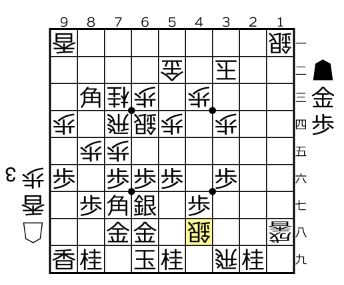
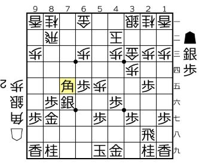
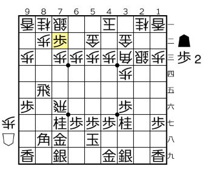
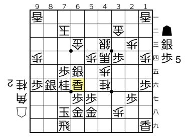

KOGANEI SHOGI
| 開催日 | ２０２１年４月２９日 |
| 開催場所 | 81道場 |
| 大会 | ４月大会 |
| 規定 | 平手 |
| 順位 | 氏名 | 段位 | 成績 |
|---|---|---|---|
| 優勝 | 亀田 雪丸 | 五段 | ４勝 |
| 準優勝 | 井塚 敦嗣 | 四段 | ３勝１敗 |
緊急事態宣言を受けての久しぶりのオンライン大会となりました。昨年の経験を生かして、かなりスムーズに運営できるようになりました。今回はブレイクアウトルームも使い、感想戦もやり易くなったのではないかと思います。
写真を取り損ねたので、代わりに少し末席幹事の自局振り返りを掲載します。
1回戦。先手のK君は最近めきめき強くなっている小学生。今回初参加です。序盤、いろいろあったものの飛車をとることができて、なんとか互角になった局面。△4八銀が疑問手。▲5八金との交換は角が受けに効いてしまい悪くしてしまいました。7六歩ならまだまだだったかな。終盤は全く緩みなく見事に寄せられてしまいました。 
2回戦。後手のIさんにはまだ勝ったことがありません。実力差はありますが一泡吹かせたいところです。チャンス到来。馬が作れると思って打った▲7五角が良くなかったようです。5三馬の効果がなく、△6六角が厳しくあっという間に後手勝勢になりました。研究にはまっている面もありましたが、もう少し落ち着いて指すべきでした。

3回戦。後手のTさんとは久しぶりの対局です。研究が深く油断できない相手です。今回は横歩取りとなりました。7二歩をうっかりされたようで先手優勢となり何とか勝利できました。 
門倉先生との指導対局。飛車落ち。玉頭を攻められ、馬を作られ、だいぶ駒も取られましたが、この香打ちが褒めていただいた好手で勝ち切ることができました。 
4回戦。後手のSさんのいままでにない序盤作戦に受けに回る展開になりました。トークもさえわたり、穴熊も崩されて絶対絶命。最後は王手で急所の金を抜くことができて熱戦に勝利しました。楽しい一局でした。